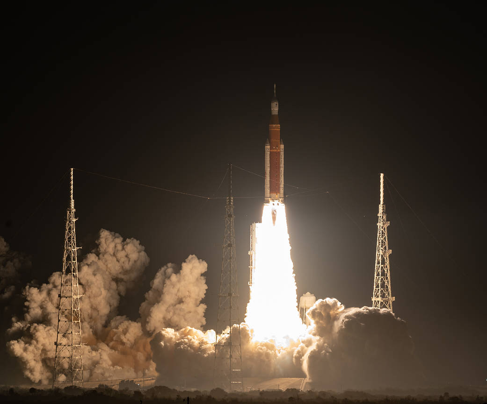

Artemis și polul sud lunar
Misiunile Artemis vor studia regiunea polului sud lunar. Astronauții vor colecta mostre și vor instala instrumente științifice.
NASA — Artemis IVNASA pregătește misiuni cu echipaj pe Lună. În paralel, companiile private dezvoltă stații pentru cercetare pe orbita Pământului.

Misiunile Artemis vor studia regiunea polului sud lunar. Astronauții vor colecta mostre și vor instala instrumente științifice.
NASA — Artemis IVSpaceX și Blue Origin dezvoltă sisteme pentru transportul astronauților pe suprafața lunară. Blue Moon include și varianta MK1, destinată transportului de echipamente.
Blue Origin — Blue Moon| Misiune / proiect | Perioadă planificată | Obiectiv |
|---|---|---|
| Artemis III | 2027 | Testarea sistemelor și a operațiunilor de andocare pe orbita Pământului. |
| Artemis IV | Începutul lui 2028 | O aselenizare cu echipaj în regiunea polului sud. |
| Stații comerciale | În dezvoltare | Noi destinații pentru cercetare și activități pe orbită. |
Stațiile comerciale ar urma să continue cercetarea pe orbita joasă după retragerea ISS.
Stație propusă de Blue Origin pentru experimente și activități comerciale.
Module planificate să fie atașate inițial la ISS, apoi să formeze o stație independentă.
O viitoare stație comercială destinată experimentelor și lucrului în microgravitație.